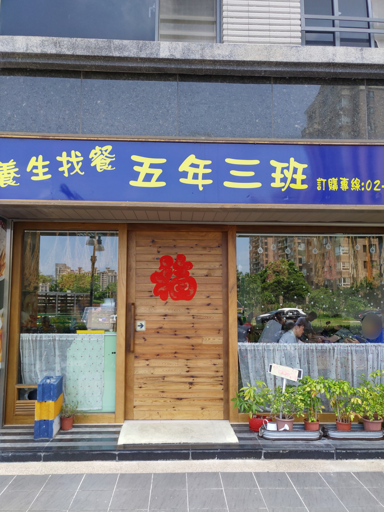
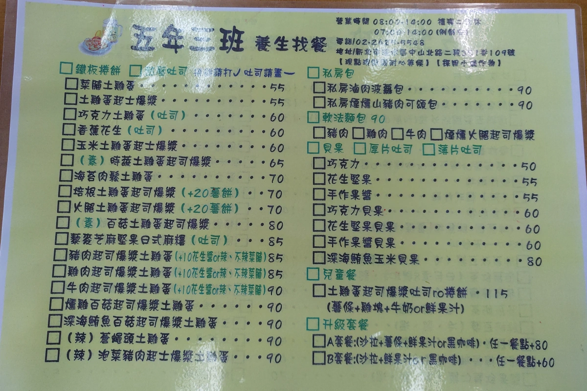
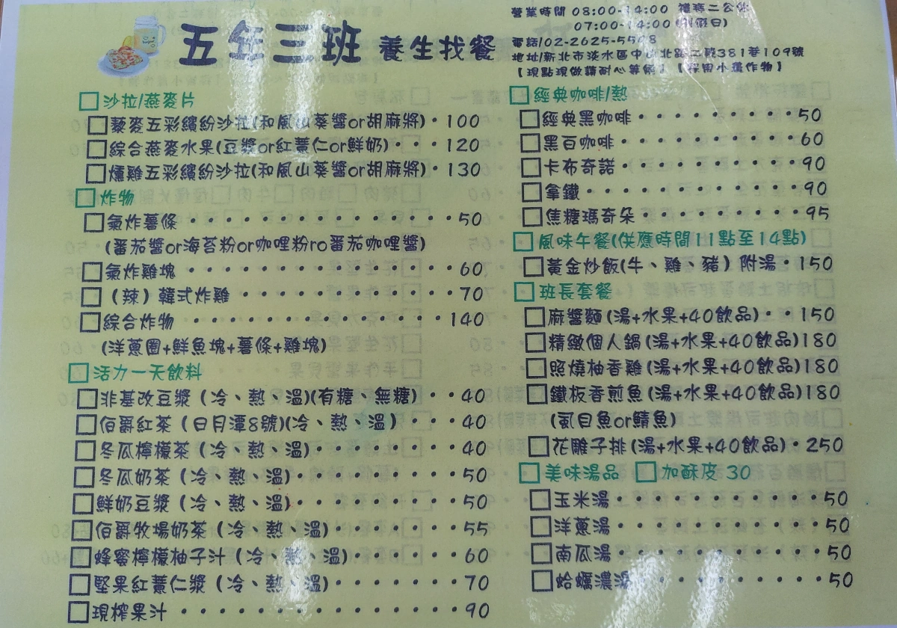
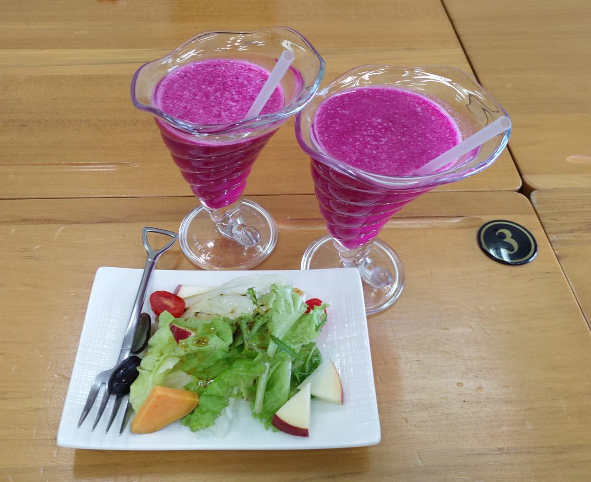
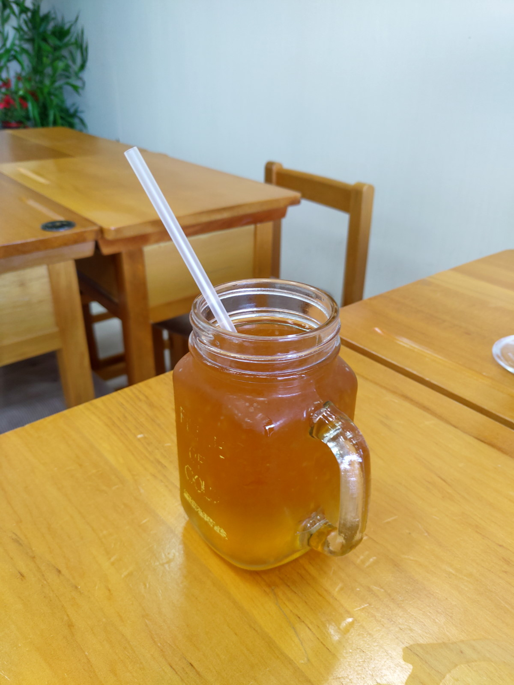
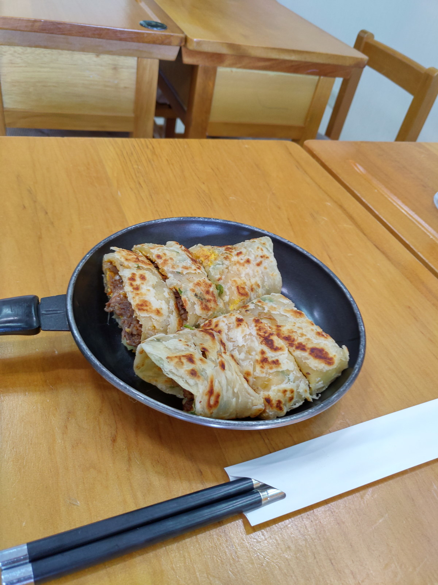
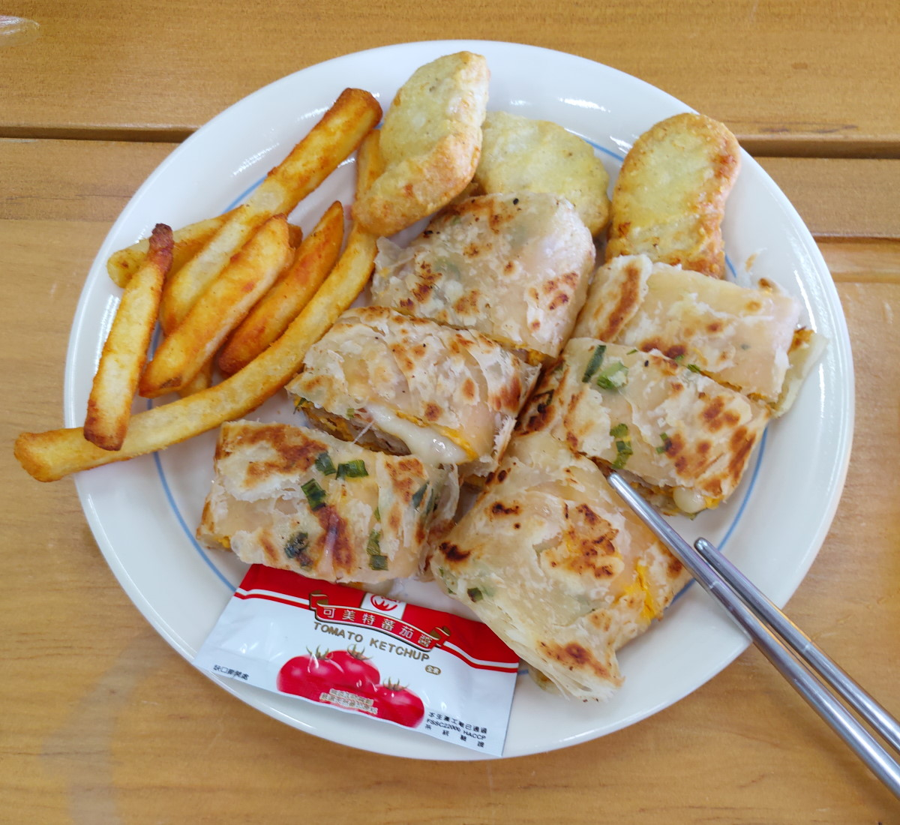
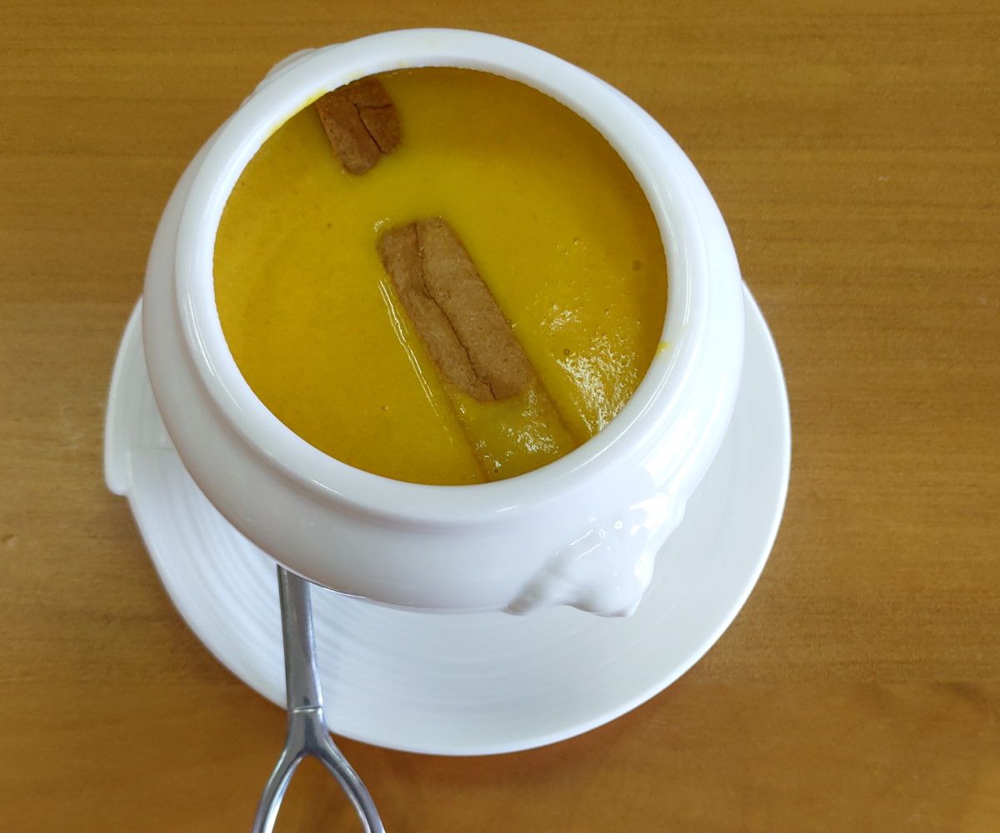

[淡水] 找餐五年三班
| 餐廳名稱: | 找餐五年三班 |
|---|---|
| 地 址: | 新北市淡水區中山北路二段381巷109號 |
| 營業時間: | 週三 ~ 週一 07:00~14:00 |
| 週二 公休 | |
| 電話 : | 02 2625 5548 |
老家在淡水，一樣是某個星期天，許多淡水傳統早餐名店都吃過了，想找個新奇早餐試試， 看看 Google 地圖附近餐廳的分數，這家 找餐五年三班 是高分。 看它官網標榜都是用健康食材， 似乎挺有特色的，就決定是它了。開車幾分鐘就到，沒想到是新開幕的 淡水運動中心旁邊，有 充裕的停車位。再隔壁是淡水家樂福，地理位置不錯耶。

找餐五年三班 菜單 可看它的官網。
二訪的時候補拍菜單了，當然還是官網的比較清楚。 

點一個套餐 跟 兒童餐，兩杯火龍果汁先來。還有生菜沙拉。 
冬瓜檸檬茶 
牛肉起司爆漿土雞蛋 鐵板捲餅。 
兒童餐，捲餅是土雞蛋起司鐵板捲餅。 
南瓜湯。 
所有食物都中規中矩，味道不錯。感覺的出來食材用的挺實在的，不會因為追求便宜去用一些次級品， 是很有良心的店家。它也有一些適合午餐的菜色，有機會 會再來訪。